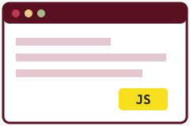
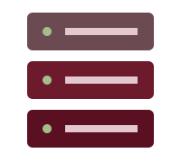
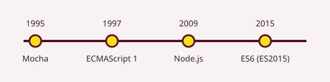

1. История создания

JavaScript появился в 1995 году в компании Netscape Communications. Его автор — Брендан Эйх (Brendan Eich), который написал первую версию примерно за десять дней. Нужен был простой язык, чтобы «оживлять» страницы в браузере Netscape Navigator: проверять формы, реагировать на клики, менять содержимое страницы.
Сначала язык назывался Mocha, затем LiveScript, а в декабре 1995 года получил название JavaScript. Название выбрали из маркетинговых соображений, чтобы использовать популярность языка Java1, хотя общего у этих языков мало.

В 1996 году Microsoft выпустила собственную реализацию — JScript, и это породило несовместимость браузеров. Чтобы навести порядок, язык стандартизировали: в 1997 году вышла первая редакция стандарта ECMA-262, известного как ECMAScript
. В 2008 году Google выпустила браузер Chrome с быстрым движком V8, а в 2009 году Райан Дал создал на его основе платформу Node.js, позволившую запускать JavaScript на сервере.
«Любое приложение, которое может быть написано на JavaScript, в конце концов будет написано на JavaScript».
Закон Этвуда, 2007 год

Подробнее об истории языка можно прочитать в статье Википедии. Перейти к описанию возможностей языка: краткий обзор.
Основные этапы развития стандарта:
| Версия | Год | Что появилось |
|---|---|---|
| Начиная с 2015 года новые версии стандарта выходят ежегодно. | ||
| ES1 | 1997 | Первая редакция стандарта |
| ES3 | 1999 | Регулярные выражения, try/catch |
| ES5 | 2009 | Строгий режим, JSON, методы массивов |
| ES6 (ES2015) | 2015 | Классы, модули, стрелочные функции, let и const |
| ES2017 | 2017 | async/await |
2. Краткий обзор языка
JavaScript — высокоуровневый интерпретируемый язык с динамической типизацией. Сегодня он используется почти везде: в браузерах, на серверах, в мобильных и десктопных приложениях.
Ключевые особенности языка:
- динамическая типизация: тип имеют значения, а не переменные;
- функции являются объектами первого класса;
- объектная модель основана на прототипах;
- однопоточное выполнение и событийный цикл (event loop).
Где применяется JavaScript:
- интерактивные веб-страницы (DOM, события);
- серверная разработка (Node.js);
- мобильные приложения (React Native);
- десктопные приложения (Electron).
Чтобы начать писать на JavaScript, нужно:
- установить редактор кода;
- создать файл с расширением
.jsили добавить тег<script>в HTML; - открыть страницу в браузере;
- нажать F12, чтобы увидеть консоль и ошибки.
Типы данных в языке: Number, String, Boolean, Null, Undefined, Symbol, BigInt и Object. Для описания терминов:
- DOM
- объектная модель документа, через которую скрипт управляет страницей;
- Node.js
- среда выполнения JavaScript вне браузера.
Устаревший способ объявления varlet и const. Справочник по языку: MDN Web Docs.
Формула для примера: H2O и x2.
Перейти к примерам кода.
3. Примеры кода
Код оформлен с цветовой подсветкой элементов, как в темной теме редактора кода (по аналогии с VS Code Dark+). Что каким цветом выделено:
const, function — ключевые слова; "строка" — строки; 123 — числа; // комментарий — комментарии; greet() — функции; user — переменные.
Пример 1. Переменные и функция:
// Объявление переменных и функции
const name = "Мир";
let count = 3;
function greet(user) {
return `Привет, ${user}!`;
}
console.log(greet(name));Пример 2. Работа с массивом:
const numbers = [1, 2, 3, 4, 5];
// Возводим числа в квадрат и оставляем чётные
const squares = numbers.map(n => n * n);
const even = squares.filter(n => n % 2 === 0);
console.log(squares); // [1, 4, 9, 16, 25]
console.log(even); // [4, 16]Пример 3. Обработка события на странице:
const button = document.querySelector("#btn");
button.addEventListener("click", () => {
alert("Кнопка нажата!");
});4. Использованные теги и CSS-свойства
HTML-теги (всего 53):
- <a>
- <abbr>
- <b>
- <blockquote>
- <body>
- <br>
- <caption>
- <cite>
- <code>
- <dd>
- <del>
- <dl>
- <dt>
- <em>
- <figcaption>
- <figure>
- <footer>
- <h1>
- <h2>
- <head>
- <header>
- <hr>
- <html>
- <i>
- <img>
- <ins>
- <kbd>
- <li>
- <link>
- <main>
- <mark>
- <meta>
- <nav>
- <ol>
- <p>
- <pre>
- <q>
- <section>
- <small>
- <span>
- <strong>
- <sub>
- <sup>
- <table>
- <tbody>
- <td>
- <tfoot>
- <th>
- <thead>
- <title>
- <tr>
- <u>
- <ul>
CSS-свойства (всего 48):
- background-color
- border
- border-bottom
- border-collapse
- border-left
- border-radius
- bottom
- box-shadow
- caption-side
- clear
- color
- column-count
- column-gap
- cursor
- display
- float
- font-family
- font-size
- font-style
- font-weight
- height
- letter-spacing
- line-height
- list-style-image
- list-style-type
- margin
- margin-top
- max-width
- opacity
- overflow
- overflow-x
- padding
- padding-bottom
- padding-left
- position
- right
- src
- tab-size
- text-align
- text-decoration
- text-indent
- text-shadow
- text-transform
- transition
- vertical-align
- white-space
- width
- z-index